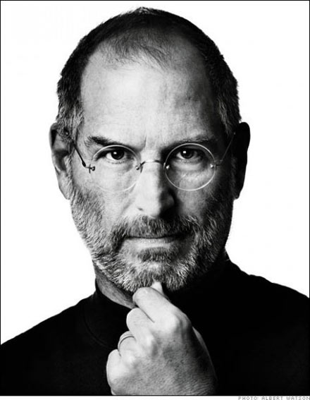
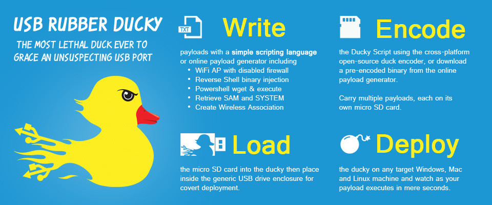

Dream Team
Just do it

Поради від Стіва Джобса
- Займайся своєю улюбленою справою. Знайди своє справжнє захоплення і змінюй світ на краще. Єдиний спосіб робити роботу добре - це любити її і віддаватися їй повністю.
- Будь не таким, як усі. Думай нестандартно. Краще бути піратом, ніж військовим моряком.
- Чим би ти не займався, старайся все зробити якнайкраще. Успіх тягне за собою інший успіх, тому у всьому прагни до максимального успіху.
- Працюй над SWOT аналізом. Як тільки ти створиш, або прийдеш на роботу в компанію, склади список сильних і слабких сторін, як своїх, так і компанії.
- Будь заповзятливим. Шукай можливості для здійснення великого прориву. Знайди набір ідей, що вимагають швидких і рішучих дій, і "стрибни в це вікно". Найчастіше найважче - зробити перший крок. Просто зроби його. Май сміливість слідувати велінням свого серця й інтуїції.
- Починай з малого, але мрій про велике. Не займайся одночасно занадто багатьма речами. Займися спочатку небагатьма простими справами, і поступово переходь до більш складних. І завжди думай про майбутнє.
- Прагни стати лідером. Чим би ти не займався, у тебе має бути сама передова технологія, і вона повинна знаходитися у тебе під контролем. Якщо існує більш передова технологія, використовуй її, не звертаючи уваги на те, що більше її ніхто не використовує. Будь першим і зроби цю технологію стандартом у галузі.
- Концентруйся на досягненні результату, оскільки люди оцінюють тебе за результатами твоєї роботи. Будь взірцем якості. Деякі люди не очікують побачити робоче середовище, в якій від співробітників очікуються тільки видатні результати. Тому рекламуй свою конкурентну перевагу.
- Витягуй уроки з невдач. Іноді, вводячи інновації, ти робиш помилки. Краще за все швидко визнати їх і, якщо з'ясувалося, що даний напрямок є тупиковим, переключи зусилля на поліпшення інших інновацій.
- Прагни отримувати зворотний зв'язок з різноманітних джерел. Кожна людина скаже тобі щось корисне.
- Вводь інновації. Саме інновації відрізняють лідера від послідовників. Витрачай 50% свого часу на створення нових речей, але при цьому говори "ні" тисячі ідей, щоб не виявилося так, що ти залучений в занадто велике число інновацій. Концентруйся на по-справжньому важливих проектах.
- Вчися безперервно. Завжди є «ще одна річ», яку потрібно дізнатися. Влаштовуй перехресне запилення ідей з іншими людьми.
